4 - Design Thinking and Communication
Table of Contents
1 Uses of 2D and 3D sketching and digital tools
Engineering drawing and artistic types of drawing, and either may be called simply "drawing" when the context is implicit. Engineering drawing shares some traits with artistic drawing in that both create pictures. But whereas the purpose of artistic drawing is to convey emotion or artistic sensitivity in some way (subjective impressions), the purpose of engineering drawing is to convey information (objective facts).
4.1a Demonstrate an understanding of how to use annotated sketching and digital tools to graphically communicate ideas and sketch modelling to explore possible improvements, in terms of physical requirements, such as:
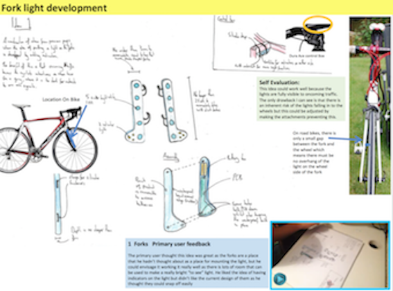
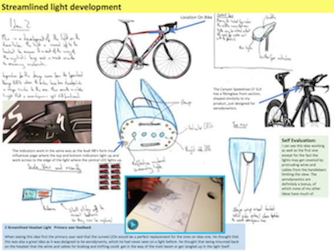
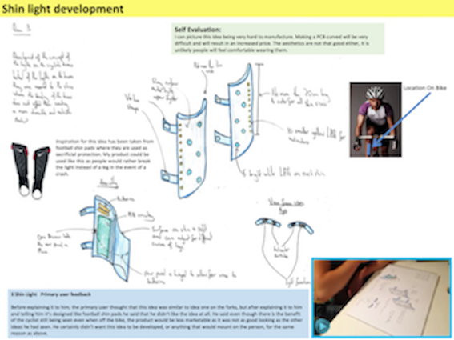
i. function, usability, construction, movement, stability, composition, strength.
When developing ideas you will need to disuss the following:
- The functionality, how does the project work, how does it solve the users needs and wants?
- Usability, how easy is the product to use, if the user group finds it difficult to operate, then it will need to be re-designed.
- Contruction, how is the product put together, is it glued, welded, screwed together for example?
- Movement, how will any movement be achieved? Will it use any mechanisms for example?
- Stability, will it be able to repeat the tasks without any hinderance or issues?
- Composition, what materials are used to make the product and are they suitable?
- Strength, are the materials you have used strong enough to withstand any forces applied?
ii. aesthetic qualities
As a consumer, most of us are very interested in the way the product looks, have you taken into account what the users would like to see in the product and what they would like it to look like?
iii manufacturing processes
Have you considered the options available to manufacture the parts as well as the entire product, for example:
- One-off manufacturing,
- Injection moulding,
- JIT manufacture.
These are discussed further in principle 7.
iv suitability of materials and components.
Have you discussed the suitability of all the components and maerials you have chosen for your product.
For example, have you decided to use Gold for all the part, this would not be suitable due to its' high costs, or Have you used high power transistors when you only need a low power one?
4.1b Demonstrate an understanding of methods used to represent systems and components to inform third parties, such as:
i. constructional diagrams/working drawings
Constructional diagrams/working drawings are produced as engineering drawings. These are more than merely the drawing of pictures, it is also a graphical language that communicates ideas and information from one mind to another.
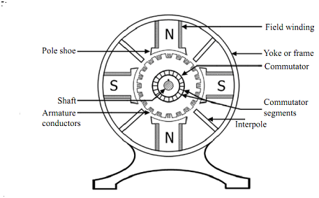
ii. digital visualisations
Digital visualisations are any techniques for creating images, diagrams, or animations to communicate a message. Visualization through visual imagery has been an effective way to communicate both abstract and concrete ideas since the dawn of humanity. Examples from history include cave paintings, Egyptian hieroglyphs, Greek geometry, and Leonardo da Vinci's revolutionary methods of technical drawing for engineering and scientific purposes.
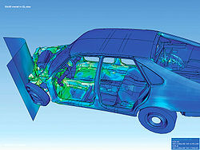
iii circuit and system diagrams
A circuit diagram (electrical diagram, elementary diagram, electronic schematic) is a graphical representation of an electrical circuit.
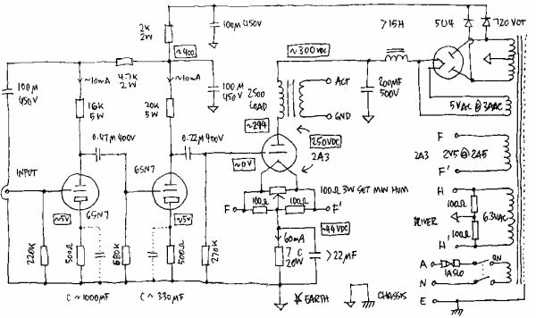
System Diagrams are models used to visually express the dynamic forces acting upon the components of a process and the interactions between those forces. System Diagrams are more than process flow charts.

iv flowcharts with associated symbols
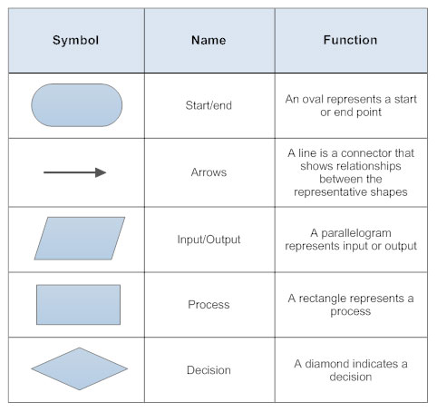
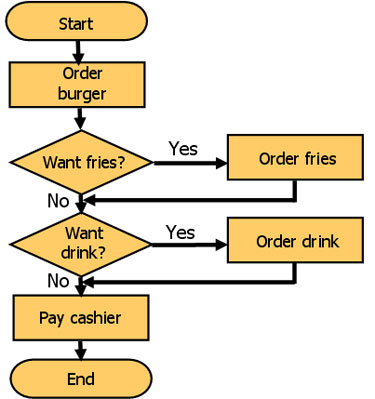
v prototypes and models.
All of your products will have been prototype modelled in SolidWorks.
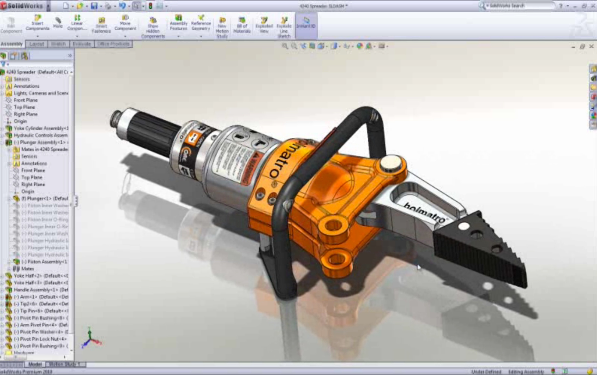
2 Industry professionals use digital design tools to support and communicate the exploration, innovation and development of design ideas?
Digital tools enable designers to visualise, develop ideas and communicate with their clients more easily, sharing ideas and information using cloud platforms, online forums and e-mail.
This is turn is making design a more collaborative process as it enables designers, engineers, manufacturers and stakeholders to have an easy input into the design process.
4.2a An understanding of how designers develop products using digital tools and online collaboration, including:
i. Discussing and exchanging ideas with specialists.
ii. Developing designs concurrently with other designers.
iii. Explaining and communicating their design decisions to stakeholders.
4.2b An understanding of how digital design software is used during design develoment, including:
i. Visual presentation, rendering and photo-quality imaging.
Visual presentations are:
- An efficient and quick way of telling the story of manufacture.
- A good way to allow audiences to absorb the information without the product being shown.
- An effective visualisation, graphic or image based communication method to display you product.
ii. Product simulation and systems simulation.
Simulation is the imitation of the operation of a real-world process or system over time. The act of simulating something first requires that a model be developed; this model represents the key characteristics, behaviors and functions of the selected physical or abstract system or process. The model represents the system itself, whereas the simulation represents the operation of the system over time.
iii. Scientific analysis of real-world physical factors to determine whether a product will break or work the way it was intended.
The scientific analysis method is a body of techniques for investigating phenomena, acquiring new knowledge, or correcting and integrating previous knowledge. To be termed scientific, a method of inquiry is commonly based on empirical or measurable evidence subject to specific principles of reasoning.
3 Design engineers use different approaches to design thinking to support the development of design ideas?
4.3a. Awareness of different strategies, techniques and approaches to explore, create and evaluate design ideas, including:
i. Iterative designing.
Iterative design is a design methodology based on a cyclic process of prototyping, testing, analyzing, and refining a product or process. Based on the results of testing the most recent iteration of a design, changes and refinements are made. This process is intended to ultimately improve the quality and functionality of a design. In iterative design, interaction with the designed system is used as a form of research for informing and evolving a project, as successive versions, or iterations of a design are implemented.
ii. User-centred design.
User-centered design (UCD) or user-driven development (UDD) is a framework of processes (not restricted to interfaces or technologies) in which usability goals, user characteristics, environment, tasks and workflow of a product, service or process are given extensive attention at each stage of the design process.
User-centered design can be characterized as a multi-stage problem-solving process that not only requires designers to analyze and envision the way users are likely to consume a product, but also to validate their assumptions with regard to the user behavior in real world tests.
These tests are conducted with/without actual users during each stage of the process from requirements, pre-production models and post production, completing a circle of proof back to and ensuring that "development proceeds with the user as the center of focus." Such testing is necessary as it is often very difficult for the designers of a product to understand intuitively what a first-time user of their design experiences, and what each user's learning curve may look like.
iii. Circular economy.
A circular economy is a regenerative system in which resource input and waste, emission, and energy leakage are minimised by slowing, closing, and narrowing material and energy loops. This can be achieved through long-lasting design, maintenance, repair, reuse, remanufacturing, refurbishing, and recycling. This is in contrast to a linear economy which is a 'take, make, dispose' model of production.
iv Systems thinking.
Critical systems thinking is a systems thinking framework that wants to bring unity to the diversity of different systems approaches and advises managers how best to use them.
Critical Systems Thinking "aims to combine systems thinking and participatory methods to address the challenges of problems characterised by large scale, complexity, uncertainty, impermanence, and imperfection. It allows nonlinear relationships, feedback loops, hierarchies, emergent properties and so on to be taken into account and Critical Systems Thinking has particularly problematised the issue of boundaries and their consequences for inclusion, exclusion and marginalisation".
4.3b. The importance of collaboration to gain specialist knowledge from across subject areas when delivering solutions in the design and manufacturing industries.
There are many good reasons to collaborate with others with specialist knowledge to develop a product, here are some of the positives:
1. Enable quick and effective decision-making
2. Facilitate research and access to relevant information and resources
3. Reuse ideas, experiences and expertise
4. Avoid redundant efforts
5. Avoid making the same mistake several times
6. Take advantage of existing experiences and expertise
7. Communicate widely and quickly important information
8. Promote and rapidly deploy reproducible standards, procedures and processes
9. Provide methods, tools, templates, techniques and examples
10. Ensure that scarce expertise is widely disseminated
11. Show clients how knowledge can be used and the benefits that can be gained
12. Accelerate delivery times for customers
13. Allow the organization to take advantage of its size
14. Make the organization the champion of reusing experience to solve its problems
15. Stimulate innovation and development
To read more about these, click on this link.
4.3c. Understand how design teams use different approaches to project managment when faced with large projects.
i Critical path analysis.
The critical path is the sequence of activities with the longest duration. A delay in any of these activities will result in a delay for the whole project. Below are some critical path examples to help you understand the key elements…
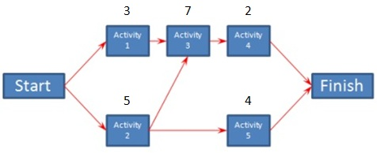
ii Scrum.
Scrum project management is a methodology for managing software delivery that comes under the broader umbrella of agile project management. It provides a lightweight process framework that embraces iterative and incremental practices, helping organizations deliver working software more frequently.
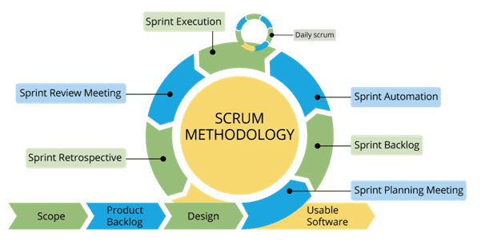
iii Six Sigma.
One melding of systems that holds significant promise is the integration of the Six Sigma methodology with the tools and processes of project management. The Six Sigma methodology DMAIC (Define, Measure, Analyze, Improve, Control) offers a structured and disciplined process for solving business problems.
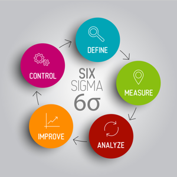